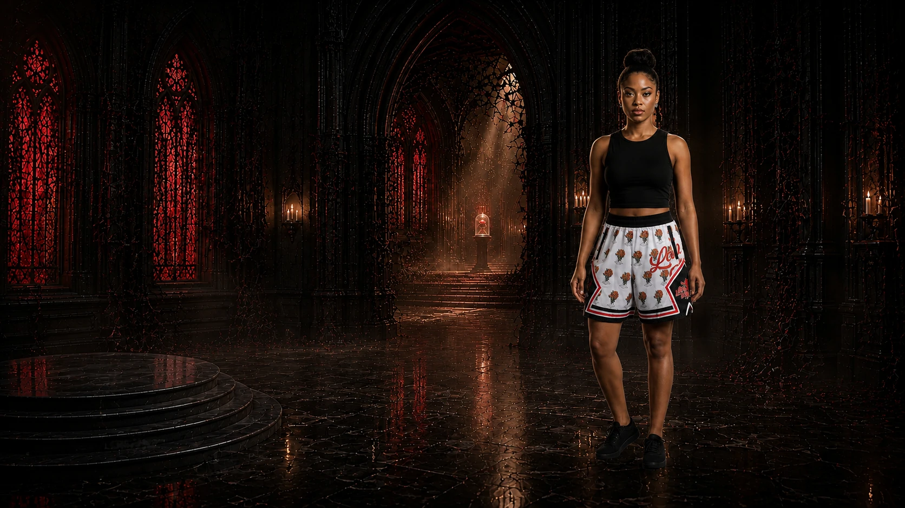
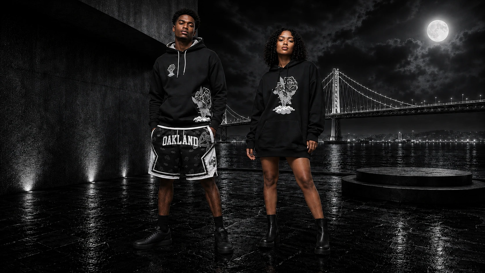
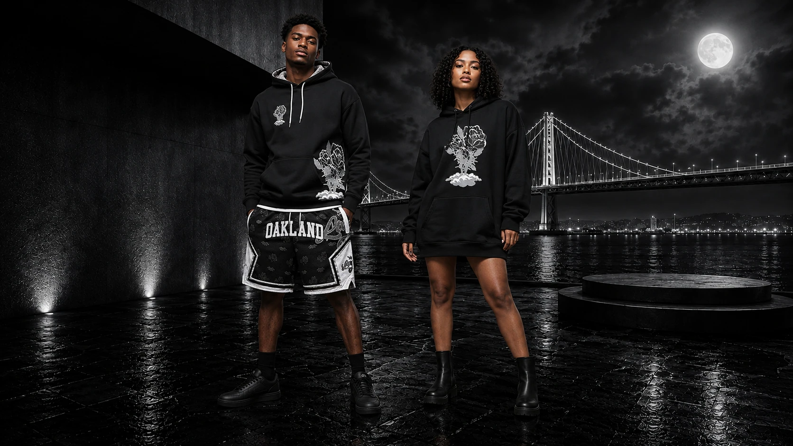
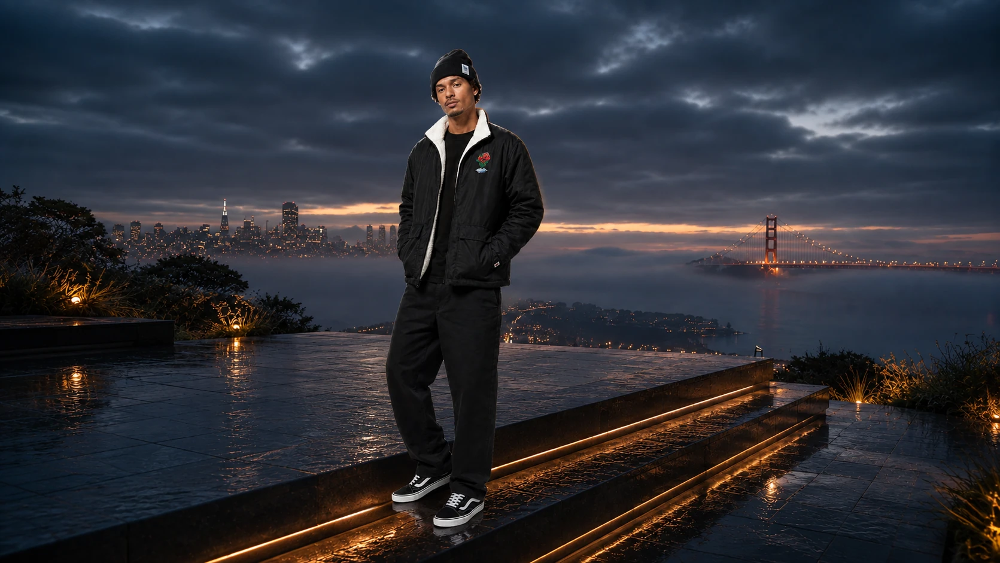
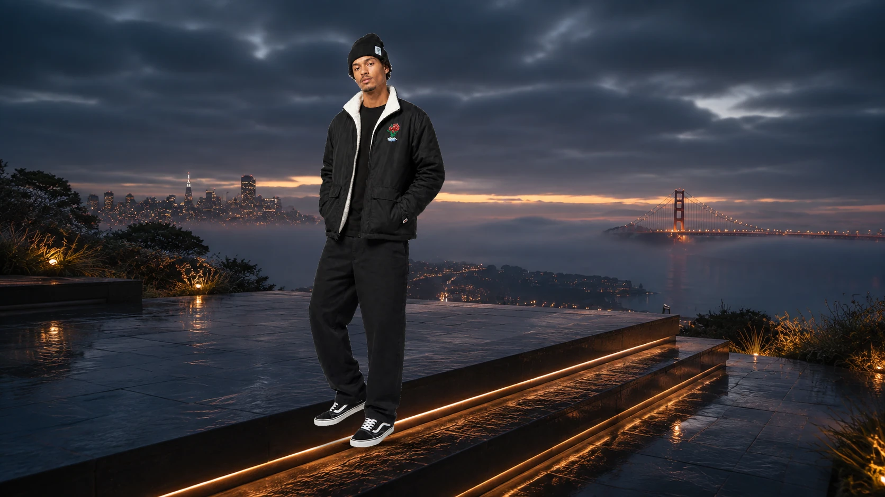
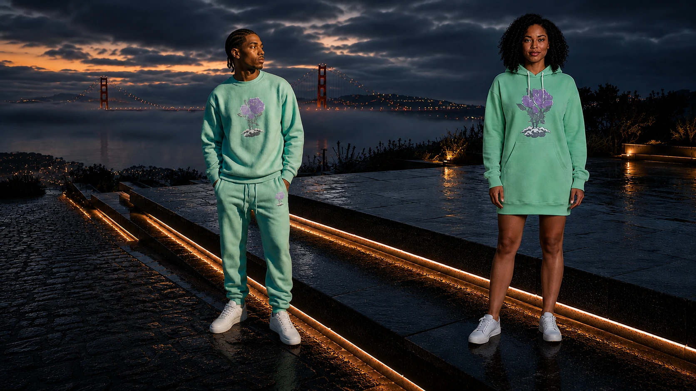
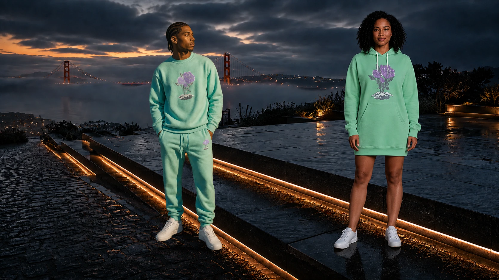

01 / LH-COMMERCE-2
Love Hurts
Crimson cathedral light, sculpted skin, candle warmth and wet-stone contact.


02 / BR-COMMERCE-2
Black Rose
Moonlit depth, dimensional black fabric and grounded waterfront presence.


03 / SIG-COMMERCE-1
Signature / I
Cool dusk, warm architectural edges and a supported stance on the terrace.


04 / SIG-COMMERCE-2
Signature / II
Shared directional light, true mint and lavender, long hoodie styled as a dress.

